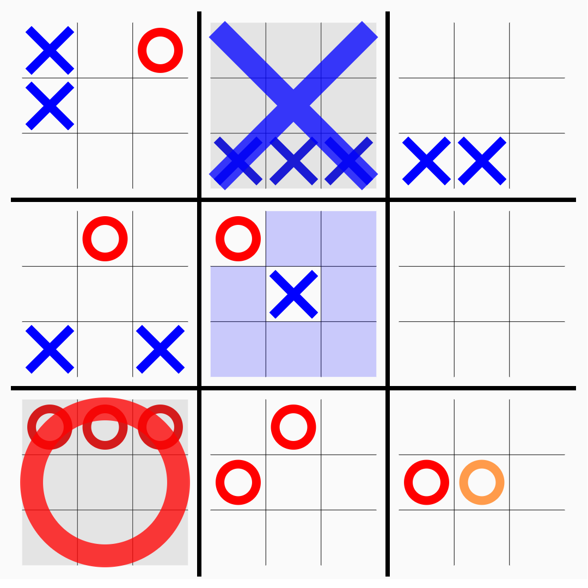
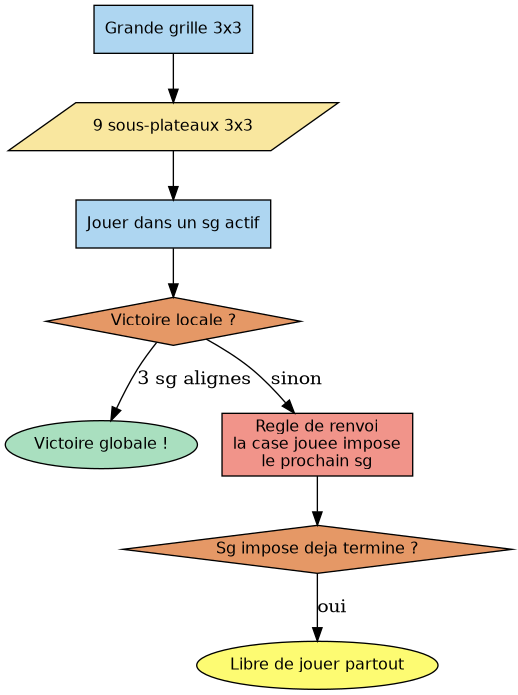
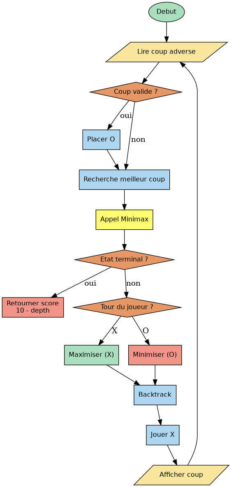
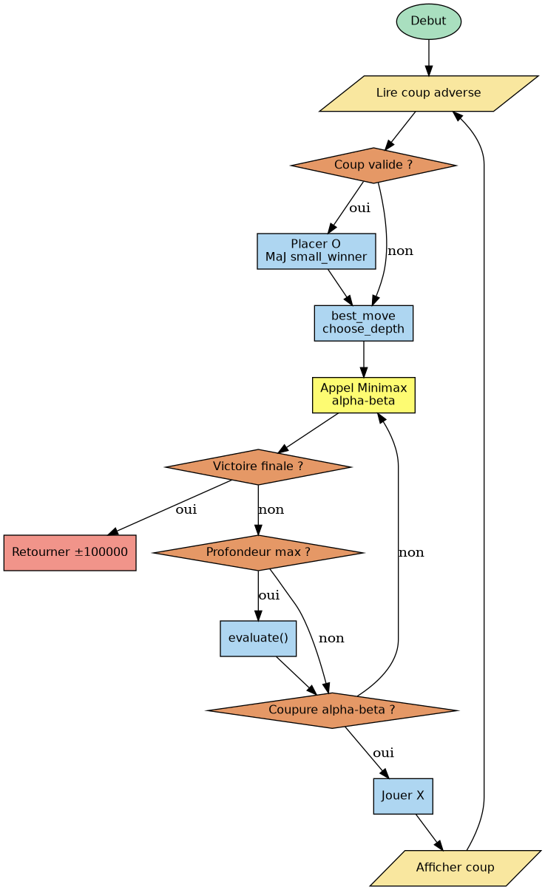
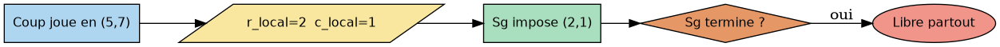

Ultimate Tic-Tac-Toe
Table des matières
Lien vers l’exercice CodingGame

1. Introduction
Ultimate Tic-Tac-Toe est un problème disponible sur le site CodingGame.
Le Tic-Tac-Toe, ou morpion, est un jeu classique entre deux joueurs sur une grille 3×3. Chaque joueur pose à tour de rôle son symbole (X ou O), et le premier à aligner trois symboles identiques (en ligne, colonne ou diagonale) gagne la partie.
Ce challenge se fait en deux étapes. La ligue Bois se joue sur un morpion classique 3×3 où l’arbre de jeu est assez petit, donc un Minimax suffit largement. La ligue Argent introduit l’Ultimate Tic-Tac-Toe avec neuf morpions imbriqués dans une grande grille. L’arbre explose et toute la stratégie doit être repensée.
2. Analyse du problème
À chaque tour, le programme reçoit en entrée les coordonnées du dernier coup adverse (opponentRow, opponentCol), ou -1 -1 si on commence. Ensuite vient le nombre de coups valides (validActionsCount), suivi des coordonnées (row, col) de chaque coup possible.
En sortie, on renvoie juste les coordonnées de notre coup. Le temps imparti est de 1000ms au premier tour et 100ms pour les suivants.
Exemple de grille gagnante pour X via la diagonale :
X O X . X O O . X
Exemple d’entrée au premier tour si on commence :
-1 -1 9 0 0 0 1 0 2 1 0 1 1 1 2 2 0 2 1 2 2
La ligue Argent ajoute la règle de renvoi, qui est ce qui distingue vraiment l’Ultimate du morpion classique :
- On joue dans une case d’un sous-plateau actif.
- La position locale jouée impose à l’adversaire dans quel sous-plateau il devra jouer au tour suivant.
- Gagner un petit plateau = aligner trois symboles dedans.
- Gagner la partie = aligner trois petits plateaux gagnés sur la grande grille.
- Si le sous-plateau imposé est déjà terminé, le joueur est libre de jouer n’importe où.
Il y a donc deux niveaux de victoire, local (un petit morpion) et global (aligner trois petits morpions gagnés). Gagner un petit plateau n’est pas toujours une bonne idée car ça peut envoyer l’adversaire dans une zone qui lui profite.

3. Ligue Bois - Minimax pur
Pour cette première étape, le bot joue au morpion classique avec l’algorithme Minimax, qui explore toutes les positions possibles jusqu’à la fin de partie.
Le plateau est un tableau board[3][3] d’entiers, 0 pour une case vide, 1 pour notre bot et -1 pour l’adversaire.
La fonction check_winner() vérifie si un joueur a aligné trois cases sur toutes les lignes, colonnes et diagonales. La condition != 0 en tête évite de détecter une « victoire » sur une ligne entièrement vide.
La fonction minimax() est récursive. Elle joue alternativement pour nous (qui maximisons le score) et pour l’adversaire (qui minimise). Les feuilles retournent un score pondéré par la profondeur (10 - depth en victoire) pour pousser l’IA à conclure rapidement plutôt que de traîner. Sans cette pondération, l’IA jouerait juste mais de façon « indifférente » et ne chercherait pas vraiment à gagner vite.
La fonction best_move() est séparée de minimax() parce que celle-ci ne remonte que des scores, les coordonées du coup sont gardées au niveau racine.

3.1. Code complet
#include <stdlib.h> #include <stdio.h> #include <string.h> #include <stdbool.h> // La grille du jeu. 1 = nous, -1 = adversaire, 0 = case vide int board[3][3]; // Vérifie si quelqu'un a gagné en alignant 3 cases // Retourne 1 si on gagne, -1 si l'adversaire gagne, 0 sinon // Le != 0 sert à ne pas détecter une victoire sur une ligne vide int check_winner() { for (int i = 0; i < 3; i++) { // on vérifie chaque ligne if (board[i][0] != 0 && board[i][0] == board[i][1] && board[i][1] == board[i][2]) return board[i][0]; // on vérifie chaque colonne if (board[0][i] != 0 && board[0][i] == board[1][i] && board[1][i] == board[2][i]) return board[0][i]; } // diagonale principale if (board[0][0] != 0 && board[0][0] == board[1][1] && board[1][1] == board[2][2]) return board[0][0]; // diagonale secondaire if (board[0][2] != 0 && board[0][2] == board[1][1] && board[1][1] == board[2][0]) return board[0][2]; return 0; } // Retourne true si toutes les cases sont remplies (match nul) bool is_full() { for (int r = 0; r < 3; r++) for (int c = 0; c < 3; c++) if (board[r][c] == 0) return false; return true; } // Minimax récursif : explore tous les coups possibles // is_my_turn = true si c'est notre tour (on maximise), false si c'est l'adversaire (il minimise) // depth = profondeur actuelle, on l'utilise pour préférer gagner vite // score = 10 - depth : plus on gagne rapidement, plus le score est élevé int minimax(bool is_my_turn, int depth) { int winner = check_winner(); if (winner == 1) return 10 - depth; // on gagne, le plus tôt c'est mieux if (winner == -1) return depth - 10; // on perd, on résiste le plus longtemps possible if (is_full()) return 0; // match nul if (is_my_turn) { int best = -100; for (int r = 0; r < 3; r++) { for (int c = 0; c < 3; c++) { if (board[r][c] == 0) { board[r][c] = 1; // on essaie ce coup int score = minimax(false, depth + 1); board[r][c] = 0; // on annule pour tester le suivant if (score > best) best = score; } } } return best; } else { int best = 100; for (int r = 0; r < 3; r++) { for (int c = 0; c < 3; c++) { if (board[r][c] == 0) { board[r][c] = -1; // l'adversaire essaie ce coup int score = minimax(true, depth + 1); board[r][c] = 0; // on annule if (score < best) best = score; } } } return best; } } // Cherche le meilleur coup possible en testant toutes les cases libres // On fait ça ici et pas dans minimax parce que minimax remonte juste un score, // pas les coordonnées du coup void best_move(int *best_row, int *best_col) { int best_score = -100; *best_row = -1; *best_col = -1; for (int r = 0; r < 3; r++) { for (int c = 0; c < 3; c++) { if (board[r][c] == 0) { board[r][c] = 1; int score = minimax(false, 0); // l'adversaire joue après nous board[r][c] = 0; if (score > best_score) { best_score = score; *best_row = r; *best_col = c; } } } } } int main() { // on initialise la grille à vide for (int r = 0; r < 3; r++) for (int c = 0; c < 3; c++) board[r][c] = 0; while (1) { int opp_row, opp_col; scanf("%d%d", &opp_row, &opp_col); // CodingGame envoie -1 -1 au premier tour quand on commence if (opp_row != -1) board[opp_row][opp_col] = -1; // on lit les coups valides mais on ne les utilise pas, // minimax explore la grille tout seul int valid_action_count; scanf("%d", &valid_action_count); for (int i = 0; i < valid_action_count; i++) { int row, col; scanf("%d%d", &row, &col); } int my_row, my_col; best_move(&my_row, &my_col); board[my_row][my_col] = 1; printf("%d %d\n", my_row, my_col); } return 0; }
4. Ligue Argent - Minimax + Alpha-bêta
Le jeu change et se complique. L’arbre devient trop grand pour être exploré entierement, il peut y avoir jusqu’à 81 coups posibles au premier tour. Il faut donc couper la recherche à une certaine profondeur, évaluer les positions intermédiaires avec une fonction de score, accélérer la recherche avec un algo alpha-bêta, et gérer les deux niveaux de victoire.
Le plateau est maintenant une grille board[9][9]. Un tableau small_winner[3][3] sers de cache pour les vainqueurs de chaque sous-plateau, mis à jour après chaque coup pour éviter de tout recalculer à chaque nœud de l’arbre.
La profondeur est adaptée par choose_depth() selon le nombre de cases restantes. Plus la partie avance, moins il y a de coups possibles et plus on peut chercher loin. Les positions non terminales sont évaluées par evaluate(), qui combine trois niveaux : victoire finale, alignements de sous-plateaux gagnés sur la grande grille (×50), et score local de chaque sous-plateau.
L’élagage alpha-bêta maintient deux bornes (alpha pour MAX et beta pour MIN) et coupe les branches dès que beta < alpha=.

4.1. Code complet
#include <stdlib.h> #include <stdio.h> #include <string.h> #include <stdbool.h> // La grille complète 9x9 de l'Ultimate TicTacToe // Le sous-plateau (gr, gc) correspond aux cases board[gr*3 .. gr*3+2][gc*3 .. gc*3+2] int board[9][9]; // Cache qui mémorise le vainqueur de chaque sous-plateau // Mis à jour après chaque coup pour éviter de tout recalculer int small_winner[3][3]; // Vérifie si quelqu'un a gagné dans le sous-plateau (gr, gc) // On copie dans un tableau b[3][3] pour simplifier les vérifications int check_small(int gr, int gc) { int b[3][3]; for (int r = 0; r < 3; r++) for (int c = 0; c < 3; c++) b[r][c] = board[gr*3+r][gc*3+c]; for (int i = 0; i < 3; i++) { if (b[i][0] != 0 && b[i][0] == b[i][1] && b[i][1] == b[i][2]) return b[i][0]; if (b[0][i] != 0 && b[0][i] == b[1][i] && b[1][i] == b[2][i]) return b[0][i]; } if (b[0][0] != 0 && b[0][0] == b[1][1] && b[1][1] == b[2][2]) return b[0][0]; if (b[0][2] != 0 && b[0][2] == b[1][1] && b[1][1] == b[2][0]) return b[0][2]; return 0; } // Vérifie si quelqu'un a gagné la grande grille // Même logique que check_small mais appliquée à small_winner int check_big() { int (*b)[3] = small_winner; for (int i = 0; i < 3; i++) { if (b[i][0] != 0 && b[i][0] == b[i][1] && b[i][1] == b[i][2]) return b[i][0]; if (b[0][i] != 0 && b[0][i] == b[1][i] && b[1][i] == b[2][i]) return b[0][i]; } if (b[0][0] != 0 && b[0][0] == b[1][1] && b[1][1] == b[2][2]) return b[0][0]; if (b[0][2] != 0 && b[0][2] == b[1][1] && b[1][1] == b[2][0]) return b[0][2]; return 0; } // Vérifie si le sous-plateau (gr, gc) est complètement rempli // Si c'est plein et non gagné, le joueur peut jouer où il veut bool small_full(int gr, int gc) { for (int r = 0; r < 3; r++) for (int c = 0; c < 3; c++) if (board[gr*3+r][gc*3+c] == 0) return false; return true; } // Donne un score à une ligne de 3 cases // 2 cases à nous sans adversaire = +10 (menace), 1 case = +1 // 2 cases adverses = -10 (danger), 1 case = -1 // Si la ligne est mixte (les deux joueurs dedans), personne peut la gagner → 0 int score_line(int a, int b, int c) { int mine = (a==1) + (b==1) + (c==1); int his = (a==-1) + (b==-1) + (c==-1); if (mine > 0 && his > 0) return 0; if (mine == 2) return 10; if (mine == 1) return 1; if (his == 2) return -10; if (his == 1) return -1; return 0; } // Évalue un sous-plateau qui n'est pas encore terminé // Si déjà gagné, valeur forte (supérieur ou egale a 100) // Sinon, on additionne score_line sur toutes les lignes, colonnes et diagonales int eval_small(int gr, int gc) { if (small_winner[gr][gc] == 1) return 100; if (small_winner[gr][gc] == -1) return -100; int score = 0; int r0 = gr*3, c0 = gc*3; for (int r = 0; r < 3; r++) score += score_line(board[r0+r][c0], board[r0+r][c0+1], board[r0+r][c0+2]); for (int c = 0; c < 3; c++) score += score_line(board[r0][c0+c], board[r0+1][c0+c], board[r0+2][c0+c]); score += score_line(board[r0][c0], board[r0+1][c0+1], board[r0+2][c0+2]); score += score_line(board[r0][c0+2], board[r0+1][c0+1], board[r0+2][c0]); return score; } // Score global de toute la position // On combine 3 niveaux par ordre d'importance : // 1. Victoire finale (supérieur ou égale a 100 000), tellement grand qu'aucun autre score ne peut dépasser // 2. Alignements de sous-plateaux gagnés sur la grande grille (×50) // 3. Score local de chaque sous-plateau avec eval_small int evaluate() { int big = check_big(); if (big == 1) return 100000; if (big == -1) return -100000; int score = 0; for (int i = 0; i < 3; i++) { score += score_line(small_winner[i][0], small_winner[i][1], small_winner[i][2]) * 50; score += score_line(small_winner[0][i], small_winner[1][i], small_winner[2][i]) * 50; } score += score_line(small_winner[0][0], small_winner[1][1], small_winner[2][2]) * 50; score += score_line(small_winner[0][2], small_winner[1][1], small_winner[2][0]) * 50; for (int gr = 0; gr < 3; gr++) for (int gc = 0; gc < 3; gc++) score += eval_small(gr, gc); return score; } // Compte toutes les cases libres dans les sous-plateaux pas encore gagnés // Ça sert à choisir la profondeur de recherche int count_free_total() { int count = 0; for (int r = 0; r < 9; r++) for (int c = 0; c < 9; c++) { int gr = r/3, gc = c/3; if (board[r][c] == 0 && small_winner[gr][gc] == 0) count++; } return count; } // Choisit la profondeur de recherche selon l'avancement de la partie // Moins il reste de coups possibles, plus on peut chercher loin // Les seuils ont été ajustés en regardant les logs sur CodingGame int choose_depth(int free_total) { if (free_total <= 6) return 6; if (free_total <= 10) return 5; if (free_total <= 20) return 4; if (free_total <= 40) return 3; return 2; } // Minimax avec élagage alpha-bêta // next_gr, next_gc = sous-plateau où on doit jouer (-1,-1 si on est libre) // alpha = meilleur score garanti pour MAX, beta = meilleur score garanti pour MIN // On coupe la branche dès que beta <= alpha, inutile d'aller plus loin int minimax(bool is_my_turn, int depth, int alpha, int beta, int next_gr, int next_gc) { int big = check_big(); if (big != 0) return big * 100000; // partie terminée if (depth == 0) return evaluate(); // profondeur max atteinte, on estime la position int player = is_my_turn ? 1 : -1; int best = is_my_turn ? -200000 : 200000; bool any_move = false; // on explore d'abord le centre, puis les coins, puis les bords // ça permet à l'alpha-bêta de couper plus tôt int order[9] = {4, 0, 2, 6, 8, 1, 3, 5, 7}; for (int gi = 0; gi < 9; gi++) { int idx = order[gi]; int r_local = idx / 3, c_local = idx % 3; for (int gr = 0; gr < 3; gr++) { for (int gc = 0; gc < 3; gc++) { // si un sous-plateau est imposé, on ignore les autres if (next_gr != -1 && (gr != next_gr || gc != next_gc)) continue; if (small_winner[gr][gc] != 0) continue; // sous-plateau déjà gagné, on skip int r = gr*3 + r_local; int c = gc*3 + c_local; if (board[r][c] != 0) continue; // case déjà occupée any_move = true; board[r][c] = player; // on joue ce coup // on sauvegarde le vainqueur du sg avant de le modifier int prev_small = small_winner[gr][gc]; int w = check_small(gr, gc); if (w != 0) small_winner[gr][gc] = w; // la case locale jouée impose le prochain sous-plateau à l'adversaire // si ce sous-plateau est déjà terminé, il est libre de jouer où il veut int imposed_gr = r_local, imposed_gc = c_local; if (small_winner[imposed_gr][imposed_gc] != 0 || small_full(imposed_gr, imposed_gc)) { imposed_gr = -1; imposed_gc = -1; } int score = minimax(!is_my_turn, depth - 1, alpha, beta, imposed_gr, imposed_gc); board[r][c] = 0; // on annule le coup (backtrack) small_winner[gr][gc] = prev_small; // on remet le cache comme avant if (is_my_turn) { if (score > best) best = score; if (best > alpha) alpha = best; } else { if (score < best) best = score; if (best < beta) beta = best; } // coupure alpha-bêta : pas besoin d'explorer la suite if (beta <= alpha) goto done; } } } done: if (!any_move) return evaluate(); // plus aucun coup possible return best; } // Cherche le meilleur coup à jouer depuis la racine // On gère ici la profondeur adaptative et le sous-plateau imposé void best_move(int next_gr, int next_gc, int *best_r, int *best_c) { int free_total = count_free_total(); int depth = choose_depth(free_total); fprintf(stderr, "total=%d depth=%d\n", free_total, depth); // log pour déboguer int best_score = -200000; *best_r = -1; *best_c = -1; // même ordre d'exploration que dans minimax int order[9] = {4, 0, 2, 6, 8, 1, 3, 5, 7}; for (int gi = 0; gi < 9; gi++) { int idx = order[gi]; int r_local = idx / 3, c_local = idx % 3; for (int gr = 0; gr < 3; gr++) { for (int gc = 0; gc < 3; gc++) { if (next_gr != -1 && (gr != next_gr || gc != next_gc)) continue; if (small_winner[gr][gc] != 0) continue; int r = gr*3 + r_local, c = gc*3 + c_local; if (board[r][c] != 0) continue; board[r][c] = 1; int prev_small = small_winner[gr][gc]; int w = check_small(gr, gc); if (w != 0) small_winner[gr][gc] = w; // on calcule quel sous-plateau sera imposé à l'adversaire int imposed_gr = r_local, imposed_gc = c_local; if (small_winner[imposed_gr][imposed_gc] != 0 || small_full(imposed_gr, imposed_gc)) { imposed_gr = -1; imposed_gc = -1; } int score = minimax(false, depth, -200000, 200000, imposed_gr, imposed_gc); board[r][c] = 0; small_winner[gr][gc] = prev_small; // on garde le coup avec le meilleur score if (score > best_score) { best_score = score; *best_r = r; *best_c = c; } } } } } int main() { memset(board, 0, sizeof(board)); memset(small_winner, 0, sizeof(small_winner)); while (1) { int opp_row, opp_col; scanf("%d%d", &opp_row, &opp_col); int next_gr = -1, next_gc = -1; if (opp_row != -1) { board[opp_row][opp_col] = -1; // on place le coup adverse sur la grille int gr = opp_row/3, gc = opp_col/3; int w = check_small(gr, gc); if (w != 0) small_winner[gr][gc] = w; // on met à jour le cache si le sg est gagné // la position locale du coup adverse nous impose notre prochain sous-plateau next_gr = opp_row % 3; next_gc = opp_col % 3; // si ce sous-plateau est déjà fini, on est libre de jouer où on veut if (small_winner[next_gr][next_gc] != 0 || small_full(next_gr, next_gc)) { next_gr = -1; next_gc = -1; } } int valid_action_count; scanf("%d", &valid_action_count); for (int i = 0; i < valid_action_count; i++) { int row, col; scanf("%d%d", &row, &col); } int my_r, my_c; best_move(next_gr, next_gc, &my_r, &my_c); board[my_r][my_c] = 1; int gr = my_r/3, gc = my_c/3; int w = check_small(gr, gc); if (w != 0) small_winner[gr][gc] = w; printf("%d %d\n", my_r, my_c); } return 0; }
5. Tests et résultats
5.1. Ligue Bois
Sur une grille vide, le bot joue en permier (X) et explore toutes les positions maximales. Il choisit toujour un coup optimal, dans le cas du morpion clasique un bot minimax parfait ne peut jamais perdre contre un adversaire humain.
Exemple de séquence gagnante pour X avec un adversaire non optimal :
Coup 1 (X) -> centre : (1,1) Coup 2 (O) -> (0,0) Coup 3 (X) -> (2,2) [prepare une diagonale et une colonne] # Etat du jeu actuelle O . . . X . . . X Coup 4 (O) -> (0,1) Coup 5 (X) -> (0,2) [blocage ligne 0] # Etat du jeu O O X . X . . . X (on remarque que le joueur X si notre robot est bien programé va forcement gagner la partie) Coup 6 (O) -> (2,1) [blocage colonne 2] Coup 7 (X) -> (2,0) [diagonale: (0,2), (1,1), (2,0)] -> Victoire X O O X . X O X . X
Sur une grille ou les deux joueurs jouent de facon optimale, minimax garanti toujour une égalité.
5.2. Ligue Argent
La profondeur adaptative passe de 2 en debut de partie jusqu’a 6 en fin de partie quand il reste peu de coups. Grace a l’alpha-bêta et a l’ordonnancement centre puis coins puis bords, le bot reste dans les tems même avec 81 coups posibles au premier tour. La règle de renvoi est bien géré, le diagramme ci-dessous illustre un exemple concret ou le coup joué en (5,7) impose le sous-plateau (2,1) a l’adversaire.

6. Bilan
Cet exercie était un des plus longs et difficle a réalsier. La ligue Bois etait une bonne mise en pratique de Minimax, un algo présenté rapidement en cours. La ligue Argent était beaucoup plus dure. L’alpha-bêta en lui-même s’ajoute assez naturellement une fois Minimax bien compris.
Ce que je referais diferemment : les poids dans evaluate() ont été choisis un peu aléatoirement.
Une approche plus optimale serait de simuler des parties avec différents barèmes et de garder celui qui gagne le plus souvent.
on pourrait ainsi réaliser les coups gagnants plus rapidement.